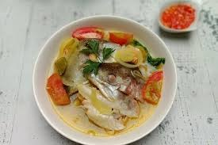

Resep Sup Ikan Salmon

Bahan :
- 500 gr fillet ikan salmon yang sudah di potong-potong
- 1 siung bawang bombai dan di iris melintang tipis
- 75 gr wortel iris secara menyerong (miring)
- 5 lembar sawi putih potong kasar
- 200 gr kentang diiris seperti dadu
- 1 lembar jamur kuping, diiris kasar
- 2 batang daun bawang,diiris kasar
- 500 ml kaldu
- garam secukupnya agar tidak hambar
- gula pasir secukupnya
Cara :
- Rendam fillet salmon dengan garam kemudian diamkan selama 10 menit. Setelah itu Cuci bersih dan celupkan dengan air mendidih sebentar kemudian tiriskan.
- Tuangkan kaldu ke dalam panci, kemudian didihkan. Tambahkan wortel dan fillet salmon, masak hingga ikan matang.
- Tambahkan bawang bombai, kentang dan daun bawang lalu didihkan kembali.
- Terakhir Beri jamur, sedikit garam dan gula pasir, aduk. Angkat dan sajikan panas.